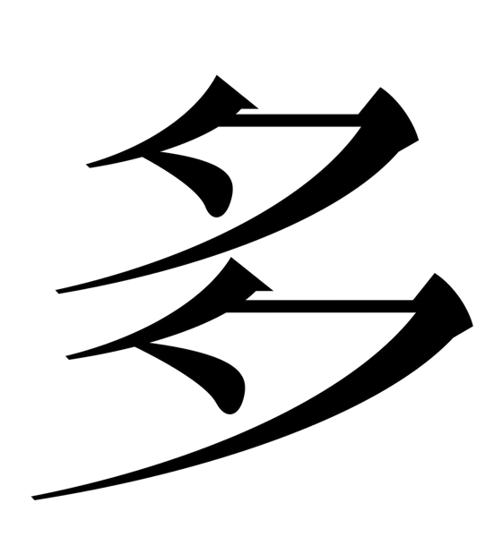
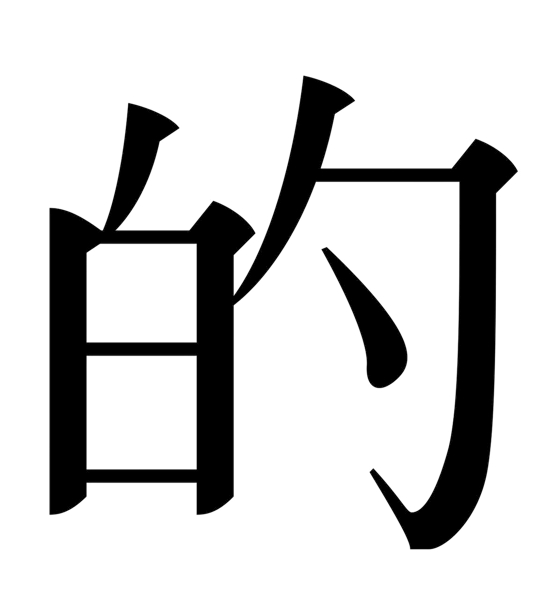
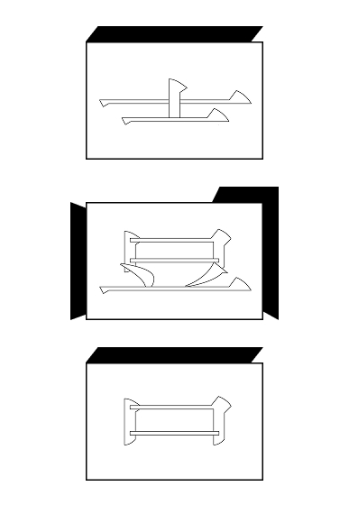
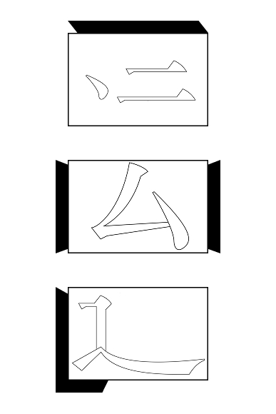

«ЯЧЕЙКА» — это архитектура для мысли и глубокого присутствия в эпоху информационного шума.
Здесь персонализированные технологии встречаются с сосредоточенным чтением и осмысленным общением.
Технология, доведённая до изящной простоты иероглифа, служит главной человеческой потребности — потребности в смысле и принадлежности.
«ЯЧЕЙКА» — это архитектура для мысли и глубокого присутствия в эпоху информационного шума.
Здесь персонализированные технологии встречаются с сосредоточенным чтением и осмысленным общением.
Технология, доведённая до изящной простоты иероглифа, служит главной человеческой потребности — потребности в смысле и принадлежности.

2/5
Философия
«ЯЧЕЙКА» возвращает чтению его сакральный статус. Мы создаём пространство, где тишина становится ценностью, а материальность — носителем смысла. От одиночного чтения через личную ячейку проект ведёт человека к коллективному резонансу и подлинному диалогу.
Философия
«ЯЧЕЙКА» возвращает чтению его сакральный статус. Мы создаём пространство, где тишина становится ценностью, а материальность — носителем смысла. От одиночного чтения через личную ячейку проект ведёт человека к коллективному резонансу и подлинному диалогу.

3/5
Как это работает
В основе «ЯЧЕЙКИ» лежит система иероглифов — семантических маркеров эмоций и состояний, которые читатель оставляет на полях книги. Они формируют «Облако смыслов» — визуальную карту коллективного переживания текста. Алгоритм соединяет людей не по интересам, а по глубине восприятия, создавая сообщества истинного резонанса.
Как это работает
В основе «ЯЧЕЙКИ» лежит система иероглифов — семантических маркеров эмоций и состояний, которые читатель оставляет на полях книги. Они формируют «Облако смыслов» — визуальную карту коллективного переживания текста. Алгоритм соединяет людей не по интересам, а по глубине восприятия, создавая сообщества истинного резонанса.
4/5
Пространство
Здание «ЯЧЕЙКИ» — это монолит мягкой жёсткости из бетона, дерева, стали и ткани. Каждая ячейка — звукоизолированная капсула, где тело и мысль находятся в гармонии. Пространства дискурса подстраиваются под суть и настроение конкретной книги, превращая чтение в архитектурное событие.
Пространство
Здание «ЯЧЕЙКИ» — это монолит мягкой жёсткости из бетона, дерева, стали и ткани. Каждая ячейка — звукоизолированная капсула, где тело и мысль находятся в гармонии. Пространства дискурса подстраиваются под суть и настроение конкретной книги, превращая чтение в архитектурное событие.
5/5
Главный смысл
«ЯЧЕЙКА» преодолевает парадокс одинокого чтения в толпе. От внешнего монолита через тактильные интерьеры к коллективному «облаку смыслов» проект ведёт человека от одиночества к сообществу. Здесь чтение становится не потреблением, а проживанием, а пространство — продолжением мысли.
Главный смысл
«ЯЧЕЙКА» преодолевает парадокс одинокого чтения в толпе. От внешнего монолита через тактильные интерьеры к коллективному «облаку смыслов» проект ведёт человека от одиночества к сообществу. Здесь чтение становится не потреблением, а проживанием, а пространство — продолжением мысли.
Архитектурная интервенция
«ЯЧЕЙКА»— интеллектуальное пространство, где технологии служат глубокому чтению и осмысленному общению.
Здесь технология, сведённая к простоте иероглифа, отвечает главной человеческой потребности — потребности в смысле и принадлежности.

(1)

(2)
(3)
(4)
(5)
(6)
(7)
Веб-плакат представляет книгу «Между пространством и материей» — архитектурное и концептуальное воплощение самой «ЯЧЕЙКИ».